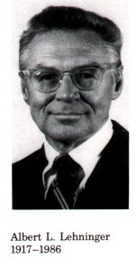
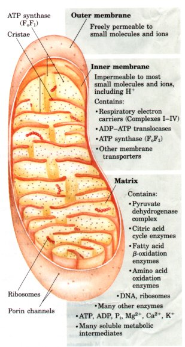
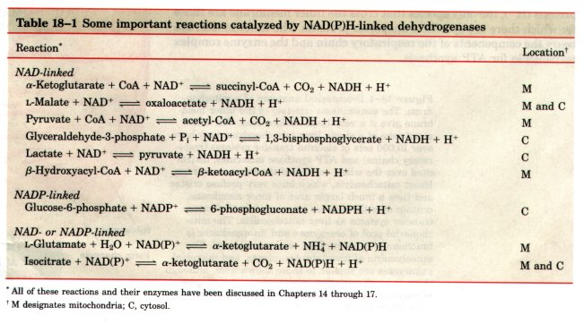

Oxidative phosphorylation (ATP synthesis tlriven by electron transfer to oxygen) and photophosphorylation (ATP synthesis driven by light) are arguably the two most important energy transductions in the biosphere. These two processes together ccount for most of the ATP synthesized by aerobic organisms. Oxidative phosphorylation is the culmination of energy-yielding metabohsm m aerobic organisms. All the enzymatic steps in the oxidative degradation of carbohydrates, fats, and amino acids in aerobic cells converge at this final stage of cellular respiration, in which electrons flow from catabolic intermediates to O2, yielding energy for the generation of ATP from ADP and Pi. Photophosphorylation is the means by which photosynthetic organisms capture the energy of sunlight, the ultimate source of energy in the biosphere.
In eukaryotes, oxidative phosphorylation occurs in mitochondria; photophosphorylation occurs in chloroplasts. Oxidative phosphorylation involves the reduction of O2 to H2O with electrons donated by NADH and FADH2, and occurs equally well in light or darkness. Photophosphorylation involves the oxidation of H2O to O2, with NADP+ as electron acceptor, and it is absolutely dependent on light. These two highly efficient energy-conserving processes occur by fundamentally similar mechanisms.
Our current understanding of ATP synthesis in mitochondria and chloroplasts is based on a hypothesis, introduced by Peter Mitchell in 1961, in which transmembrane differences in proton concentration are central to energy transduction. This chemiosmotic theory has been accepted as one of the great unifying principles of twentieth century biology. It provides insight into the processes of oxidative phosphorylation and photophosphorylation, and into such apparently disparate energy transductions as active transport across membranes and the motion of bacterial flagella. Many biochemical details of these processes remain unsolved, but the chemiosmotic model described in this chapter provides the intellectual framework for investigating those details.
There are three fundamental similarities between oxidative phosphorylation and photophosphorylation. (1) Both processes involve the flow of electrons through a chain of redox intermediates, membranebound carriers that include quinones, cytochromes, and iron-sulfur proteins. (2) The free energy made available by this "downhill" (exergonic) electron flow is coupled to the "uphill" transport of protons across a proton-impermeable membrane, conserving some of the free energy of oxidation of metabolic fuels as a transmembrane electrochemical potential (p. 287). (3) The transmembrane flow of protons down their concentration gradient through specific protein channels provides the free energy for synthesis of ATP.
In this chapter we first consider the process of oxidative phosphorylation. We begin with descriptions of the components of the electron transfer chain in mitochondria, the sequence in which these carriers act, and their organization into large functional complexes in the mitochondrial inner membrane. We then look at the chemiosmotic mechanism by which electron transfer is used to drive ATP synthesis, and the means by which this process is regulated in coordination with other energy-yielding pathways. The evolutionary origins of mitochondria, touched upon in Chapter 2, are further considered.
With this understanding of mitochondrial oxidative phosphorylation, we turn to photophosphorylation. Light-absorbing pigments in the membranes of chloroplasts and photosynthetic bacteria transfer the energy of absorbed light to reaction centers where electron flow is initiated. Electron flow occurs through a series of carriers and, as in mitochondria, this flow drives ATP synthesis by the chemiosmotic mechanism.
Mitochondrial Electron FlowThe discovery in 1948 by Eugene Kennedy and Albert Lehninger that mitochondria are the site of oxidative phosphorylation in eukaryotes marked the beginning of the modern phase of studies of biological energy transductions. Mitochondria are organelles of eukaryotic cells, believed to have arisen during evolution when aerobic bacteria capable of oxidative phosphorylation took up symbiotic residence within a primitive, anaerobic, eukaryotic host cell (see Fig. 2-17). Mitochondria, like gramnegative bacteria, have two membranes (Fig. 18-1). The outer mitochondrial membrane is readily permeable to small molecules and ions; transmembrane channels composed of the protein porin allow most molecules of molecular weight less than 5,000 to pass easily. The inner membrane is impermeable to most small molecules and ions, including protons (H+); the only species that cross the inner membrane are those for which there are specific transporter proteins. The inner membrane bears the components of the respiratory chain and the enzyme complex responsible for ATP synthesis. Figure 18-1 Biochemical anatomy of a mitochondrion. The convolutions (cristae) of the inner membrane give it a very large surface area. The inner membrane of a single liver mitochondrion may have over 10,000 sets of electron transfer systems (respiratory chains) and ATP synthase molecules, distributed over the whole surface of the inner membrane. Heart mitochondria, which have very profuse cristae and thus a much larger area of inner membrane, contain over three times as many sets of electron transfer systems as liver mitochondria. The mitochondrial pool of coenzymes and intermediates is functionally separate from the cytosolic pool. The mitochondria of invertebrates, plants, and microbial eukaryotes are similar to those shown here, althougl there is much variation in size, shape, and degree of convolution of the inner membrane. See Chapter 2 for other details of mitochondrial structure. |
  |
Recall that the mitochondrial matrix, the space enclosed by the inner membrane, contains the pyruvate dehydrogenase complex and the enzymes of the citric acid cycle, the fatty acid β-oxidation pathway, and the pathways of amino acid oxidation-all of the pathways of fuel oxidation except glycolysis, which occurs in the cytosol. Because the inner membrane is selectively permeable, it segregates the intermediates and enzymes of cytosolic metabolic pathways from those of metabolic processes occurring in the matrix. Specific transporters carry pyruvate, fatty acids, and amino acids or their α-keto derivatives into the matrix for access to the machinery of the citric acid cycle. Similarly, ADP and Pi are specifically transported into the matrix as the newly synthesized ATP is transported out.
We will discuss here in some detail the electron-carrying components of the mitochondrial respiratory chain.
Most of the electrons entering the mitochondrial respiratory chain arise from the action of dehydrogenases that collect electrons from the oxidative reactions of the pyruvate dehydrogenase complex, the citric acid cycle, the β-oxidation pathway, and the oxidative steps of amino acid catabolism and funnel them as electron pairs into the respiratory chain. These dehydrogenases use either pyridine nucleotides (NAD or NADP; Table 18-1) or flavin nucleotides (FMN or FAD) as electron acceptors.
All of the pyridine nucleotide-linked dehydrogenases catalyze reversible reactions of the following general types:
Reduced substrate + NAD+  oxidized
substrate + NADH + H+
oxidized
substrate + NADH + H+
Reduced substrate + NADP+ oxidized
substrate + NADPH + H+
Most dehydrogenases are specific for NAD+ as electron acceptor (Table 18-1), but some, such as glucose-6-phosphate dehydrogenase (see Fig. 14-22), require NADP+. A few, such as glutamate dehydrogenase, can react with either NAD+ or NADP+. Some pyridine nucleotide-linked dehydrogenases are located in the cytosol, some in the mitochondria, and still others have two isozymes, one mitochondrial and the other cytosolic.

As was described in Chapter 13, the NAD-linked dehydrogenases remove two hydrogen atoms from their substrates. One of these is transferred as a hydride ion ( :H- ) to the NAD+; the other appears as H+ in the medium (see Fig. 13-16). NAD+ can also collect reducing equivalents from substrates acted upon by NADP-linked dehydrogenases. This is made possible by pyridine nucleotide transhydrogenase, which catalyzes the reaction
NADPH + NAD+  NADP+ + NADH
NADP+ + NADH
NADH and NADPH are water-soluble electron carriers that associate reuersibly with dehydrogenases. NADH acts as a diffusible carrier, transporting the electrons derived from catabolic reactions to their point of entry into the respiratory chain, the NADH dehydrogenase complex described below. NADPH is a diffusible carrier that supplies electrons to anabolic reactions.
Flavoproteins contain a very tightly, sometimes covalently, bound flavin nucleotide, either FMN or FAD (see Fig. 13-17). The oxidized flavin nucleotide can accept either one electron (yielding the semiquinone form) or two (yielding FADH2 or FMNH2). The standard reduction potential of a flavin nucleotide, unlike that of pyridine nucleotides, depends on the protein with which it is associated. Local interactions with functional groups in the protein distort the electron orbitals in the flavin ring, changing the relative stabilities of oxidized and reduced forms. The relevant standard reduction potential is therefore that of the particular flavoprotein, not that of isolated FAD or FMN, and the flavin nucleotide should be considered part of the flavoprotein's active site, not as a reactant or product in the electron transfer reaction. Because flavoproteins can participate in either one- or two-electron transfers, they can serve as intermediates between reactions in which two electrons are donated (as in dehydrogenations) and those in which only one electron is accepted (as in the reduction of a quinone to a hydroquinone, described below).